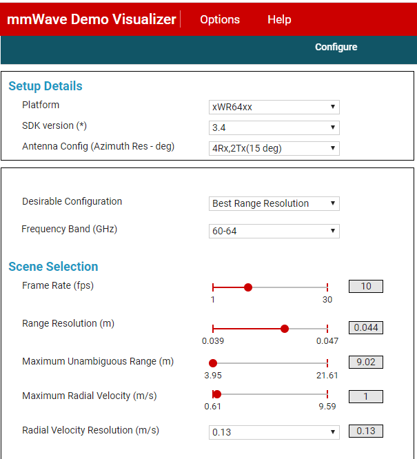
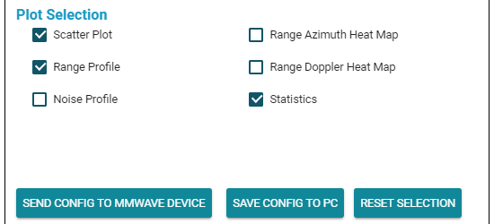
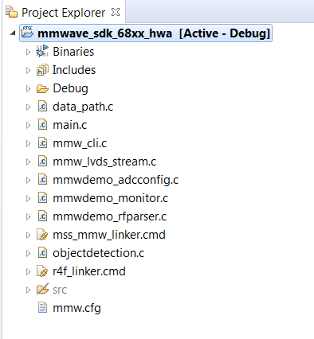
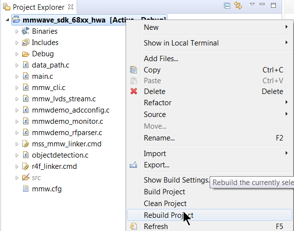

Overview of MMWAVE SDK Demo - 68xx HWA Version
===========
This is the mmWave SDK out-of-box demo lab for the TI IWR68xx EVM. Run this TI IWR68xx EVM out-of-box demo to view processed TI mmWave sensor data in configurable plots using the web-based mmWave Demo Visualizer.
**NOTE**: This version of the SDK out-of-box demo is for IWR68xx EVM but only uses the on-chip Hardware FFT acclerator (HWA) and does not utilize the c674x DSP. In this User Guide many of labels show xWR64xx but the demo is compatible with the IWR68xx device.
<img src="images/mmwave_demo_visualizer_plots.png" width="600" class="img-responsive"/>
<a name="quickstart"></a>
Hardware and Software Requirements
-----------
### Hardware
Item | Details
--------------------------|-----------------
IWR6843ISK Antenna Module Board | [IWR6843ISK ES2.0 Antenna Module](http://www.ti.com/tool/IWR6843ISK)
MMWAVEICBOOST Carrier Board | OPTIONAL: [MMWAVEICBOOST Carrier Board](http://www.ti.com/tool/MMWAVEICBOOST) for CCS based development and debugging
| Note: The rest of this document will refer to the above board combination as <b>EVM</b> .
Computer | Windows 7 or 10 PC with Google Chrome Browser and TI Cloud Agent Extension installed.
Micro USB Cable | Provided with the [Industrial Radar Carrier Board](http://www.ti.com/tool/MMWAVEICBOOST)
Power Supply | 5V, 3A with 2.1-mm barrel jack (center positive). The power supply can be wall adapter style or a battery pack with a USB to barrel jack cable.
[[r! IWR6843 ES2.0 Only
This lab is only compatible with ES2.0 version of IWR6843. Check the device version on your IWR6843ISK using the on-chip device markings as shown below>
1. If line 4 reads `678A`, you have an ES2 device. In this case, this lab is compatible with your EVM.
2. If line 4 reads `60 GHZi`, you have an older ES1 device. In this case, the lab is NOT compatible with your EVM. ES2 IWR6843ISK boards are orderable from the EVM link above.
<img src="images/iwr6843_silicon_revision.png" width="500"/>
]]
### Software
Tool | Version | Download Link
----------------------------|---------------------------|--------
TI mmWave SDK | 3.5.x.x | [Link to Latest mmWave SDK](http://software-dl.ti.com/ra-processors/esd/MMWAVE-SDK/latest/index_FDS.html) To access a previous version of the mmWave SDK scroll to the bottom of the table and click the link under "MMWAVE-SDK previous release". Repeat to continue stepping back to previous versions.
mmWave Demo Visualizer | 3.5.0+ | Available online at https://dev.ti.com/gallery/view/mmwave/mmWave_Demo_Visualizer/
mmWave Industrial Toolbox | Latest | Download and install the toolbox. Go to [Using TI Resource Explorer & the mmWave Industrial Toolbox](../../../../docs/readme.html) for instructions.
Uniflash | Latest | Uniflash tool is used for flashing TI mmWave Radar devices. [Download offline tool](http://www.ti.com/tool/UNIFLASH) or use the [Cloud version](https://dev.ti.com/uniflash/#!/)
Quickstart
===========
The quickstart guide covers setting up the EVM, flashing firmware, and running the demo.
<a name="physical_setup"></a>
1. Setup the EVM for Flashing Mode
-----------
* For MMWAVEICBOOST + Antenna Module setup: Follow the instructions for [Hardware Setup for Flashing in MMWAVEICBOOST Mode](../../../common/docs/hardware_setup/hw_setup_mmwaveicboost_mode_flashing.html)
* For IWR6843ISK in Standalone/Modular Mode: Follow the instructions for [Hardware Setup of IWR6843ISK/ODS for Flashing Mode](../../../common/docs/hardware_setup/hw_setup_isk_ods_modular_mode_flashing.html)
<a name="flash_the_evm"></a>
2. Flash the EVM using Uniflash
-----------
Flash the binary listed below using UniFlash. Follow the instructions for [using UniFlash](../../../common/docs/software_setup/using_uniflash_with_mmwave.html)
BIN Name | Location
-----------------------|------------
xwr64xx_mmw_demo.bin | `<INDUSTRIAL_TOOLBOX_INSTALL_DIR>\mmwave_industrial_toolbox_<VER>\out_of_box_demo\`<br>`68xx_mmwave_sdk_hwa\prebuilt_binaries\xwr64xx_mmw_demo.bin`
3. Setup the EVM for Functional Mode
-----------
* For MMWAVEICBOOST + Antenna Module setup: Follow the instructions for [Hardware Setup of MMWAVEICBOOST + Antenna Module for Functional Mode](../../../common/docs/hardware_setup/hw_setup_mmwaveicboost_mode_functional.html)
* For IWR6843ISK in Standalone/Modular Mode: Follow the instructions for [Hardware Setup of IWR6843ISK/ODS for Functional Mode](../../../common/docs/hardware_setup/hw_setup_isk_ods_modular_mode_functional.html)
<a name="run_the_lab"></a>
4. Run the Lab
-----------
### 1. GUI Setup
* Power up the EVM and connect it to the Windows PC with the provided USB cable (make sure that the SOP2 jumper is removed). Mount the setup vertically as shown in [Physical Setup](#physical_setup)
* Using Google Chrome, navigate to the following URL: https://dev.ti.com/mmWaveDemoVisualizer
* If prompted, follow the on-screen instructions for installing TI Cloud Agent (this is need the first time on a new PC)
* In the GUI menu, select Options → Serial Port
* In the serial port window, enter the appropriate port in each of the drop down menus based on your port numbers from the [Flash the EVM](#flash_the_evm) section
* Click on Configure to connect the GUI to the EVM. The GUI Status bar should show <b>Conected:</b> <img src="images/mmwave_demo_visualizer_connected.png" width="30" height="20"/>
<img src="images/mmwave_demo_visualizer_ports.png" width="600"/>
### 2. Running the Demo
-----------
* On the Configure Tab, select the appropriate mmWave SDK and the **xWR64XX device** from the Platform dropdown menu
* **NOTE**: Since we are using the HWA version of this lab, the **xWR64XX device** mus be selected.
* Use the available sliders to create the desired configuration.
* You can also use the presets available in the Desirable Configuration drop-down list.
* Additional details about the configuration parameters can be found in the [mmWave Demo Visualizer User Guide](http://www.ti.com/lit/pdf/swru529)

* Select the desired plots under Plot Selection (e.g. Scatter Plot, Range Azimuth Plot)
* When ready to send the configuration, click on Send Config To mmWave Device

* Click on the Plots tab to view the plots that were selected to be shown
<img src="images/mmwave_demo_visualizer_plots.png" width="600" />
* Move a highly reflective object in front of the EVM and see how the demo responds.
* You can use the Real Time Tuning controls shown below to adjust CFAR thresholds, Modify Field of View and enable or disable Peak grouping in real time.
<img src="images/mmwave_demo_visualizer_rt_tuning.png" width="550"/>
* This concludes the Quick Start Section
Developer's Guide
===========
Build the Firmware from Source Code
-----------
<a name="software_requirements"></a>
### 1. Software Requirements
Tool | Version | Download Link
----------------------------|---------------------------|--------------
TI mmWave SDK | 3.5.x.x | [Link to Latest mmWave SDK](http://software-dl.ti.com/ra-processors/esd/MMWAVE-SDK/latest/index_FDS.html) To access a previous version of the mmWave SDK scroll to the bottom of the table and click the link under "MMWAVE-SDK previous release". Repeat to continue stepping back to previous versions.
Code Composer Studio | 8.3.1 | [Code Composer Studio v8.3.1](http://processors.wiki.ti.com/index.php/Download_CCS)
mmWave Industrial Toolbox | Latest | Download and install the toolbox. Go to [Using TI Resource Explorer & the mmWave Industrial Toolbox](../../../../docs/readme.html) for instructions.
### 2. Import Lab Project
The mmWave SDK Out-of-box demo Lab CCS Project is available under on TI Resource Explorer under mmWave Sensors → mmWave Industrial Toolbox. You can import the project in your CCS workspace using TI Resource Explorer in CCS or using a browser. Both methods of importing projects are defined in the Expand boxes below.
* Start CCS and setup workspace as desired.
* Import the project below to CCS using either TI Resource Explorer in CCS or CCS Import Projectspecs method:
* **mmwave_sdk_68xx_hwa**
[[+d Expand for details on importing via TI Resource Explorer in CCS
* In the top toolbar, navigate to **View → Resource Explorer**
* In the **Resource Explorer** side panel (not the main panel with "Welcome to.."), navigate to **Software → mmWave Sensors → Industrial Toolbox - <ver> → Labs → mmWave SDK Demo - 68xx HWA Version**
* Under the expanded **mmWave SDK Demo - 68xx HWA Version** folder, there should be a CCS project named **mmwave_sdk_68xx_hwa**.
* Click on the project, which should open the project in the right main panel, and then click on the Import to IDE button <img src="images/common/import_ide_icon.png" width="40"/>.
+]]
[[+d Expand for details on importing via CCS Import Projectspecs
* In the top toolbar, navigate to **Project → Import CCS Projects...**
* With the **Select search-directory** option enabled, click **Browse...**, navigate to the **68xx_mmwave_sdk_hwa** folder at `C:\ti\<mmwave_industrial_toolbox_install_dir>\labs\out_of_box_demo\68xx_mmwave_sdk_hwa`, and then click **OK**.
* Under **Discovered projects**, select **mmwave_sdk_68xx_hwa** then click **Finish**.
+]]
[[g! Successful Import to IDE
After using either method, the mmwave_sdk_68xx_mss project should be visible in **CCS Project Explorer**

]]
[[b! Project Workspace
When importing projects to a workspace, a copy is created in the workspace. It is important to note that the copy in user's workspace is the one that gets built and all modifications will only be implemented for the workspace copy. The original project downloaded in mmWave Industrial Toolbox is not modified.
]]
### 3. Build the Lab
With the **mmwave_sdk_68xx_hwa** project selected in **Project Explorer**, right click on the project and select **Rebuild Project**.

{{y Selecting Rebuild instead of Build ensures that the project is always re-compiled. This is especially important in case the previous build failed with errors.}}
[[g! Successful Project Build
In the **Project Explorer** panel, navigate to and expand **mmwave_sdk_68xx_hwa → Debug** directory. On successfull build, the following files should appear in the **Debug** folder:
* xwr64xx_mmw_demo.bin (this is the flashable binary used for deployment mode)
* xwr64xx_mmw_mss.xer4f (this is the Cortex R4F binary used for CCS debug mode)
]]
[[r! Build Fails with Errors
If the build fails with errors, please ensure that all the [prerequisites](#software_requirements) are installed as mentioned in the mmWave SDK release notes.
]]
[[b! Note
As mentioned in the [Quickstart](#quickstart) section, pre-built binary files, both .xer4f and .bin, are provided in mmwave SDK under C:\ti\mmwave_sdk_03_04_xx_xx\packages\ti\demo\xwr64xx\mmw\.
]]
### 4. Execute the Lab
There are two ways to execute the compiled code on the EVM:
* **Deployment mode**: In this mode, the EVM boots autonomously from flash and starts running the bin image
* Using Uniflash, flash the **xwr64xx_mmw_demo.bin** found at `<PROJECT_WORKSPACE_DIR>\mmwave_sdk_68xx_hwa\Debug\xwr64xx_mmw_demo.bin`
* The procedure to flash the EVM is the same as detailed in the [Flash the EVM](#flash_the_evm) section.
* **Debug mode**: This mode is is used for downloading and running the executable (.xer4f) from CCS. This mode enables JTAG connection with CCS while lab is running; useful during development and debugging
[[+d Expand for help with Debug mode:
The CCS debug firmware (provided with the mmWave SDK) needs to be flashed once on the EVM.
* CCS Debug method is enabled by flashing the CCS Debug Firmware (provided with the mmWave SDK) using the methods covered in the Quickstart [Flash the Device](#1-flash-the-evm) section.
* Use the following image instead
Image | Location | Comment
----------------|--------------|------------------------
Meta Image 1 | `C:\ti\mmwave_sdk_<ver>\packages\ti\utils\ccsdebug\xwr68xx_ccsdebug.bin` | Provided with the mmWave SDK
After the CCS debug firmware has been flashed, connect the EVM to CCS
* Create a target configuration (skip to "Open the target..." if config already created previously in another lab for xwr68xx)
* Go to **File → New → New Target Configuration File**
* Specify an appropriate file name (ex: IWR68xx.ccxml) and check "**Use shared location**". Click **Finish**.
* In the configuration editor window:
* Select **Texas Instruments XDS110 USB Debug Probe** for Connection
* Select **IWR6843** in the **Board or Device** text box.
* Press the **Save** button to save the target configuration.
* [Optional]: Press the **Test Connection** button to check the connection with the board.
* Open the target configuration window by going to **View → Target Configurations**.
* Under **User Defined** configurations the target configuration previously created should appear.
* Right click on the target configuration and select **Launch Select Configuration**. The target configuration will launch in the **Debug Window**.
<img src="images/common/target_config.png" width="450"/>
* Select the **Texas Instruments XDS110 USB Debug probe/Cortex_R4_0** and then right click and select **Connect Target**
<img src="images/common/connect_target.png" width="600"/>
* Load the binary
* With the **Cortex_R4_0** target connected, click on the **Cortex_R4_0** target and then click **Load** button in the toolbar. <img src="images/common/load_program_icon.png" width="40"/>
<img src="images/common/load_program.png" width="600"/>
* In the **Load Program** dialog, press the **Browse Project** button .
* Select **xwr64xx_mmw_mss.xer4f** found at `<PROJECT_WORKSPACE_DIR>\mmwave_sdk_68xx_hwa\Debug\xwr64xx_mmw_mss.xer4f` and press **Ok**.
* Press **Ok** again in the **Load Program** dialog.
* Run the binary
* Select **Texas Instruments XDS110 USB Debug probe/Cortex_R4_0**, press the **Run/Resume** button <img src="images/common/run_resume_icon.png" width="30"/>
* The program should start executing and generate console output as shown.
<img src="images/ccsdebug_console.png" width="600"/>
[[g! Successful Run Binary
If binary is running correctly, the Console will include the “CLI is operational” message which indicates that the program is ready and waiting for the sensor configuration.
]]
+]]
### 5. Output from mmWave Demo Visualizer<br> and Output using DCA1000EVM
The mmWave Demo Visualizer is used to visualize processed output data from the mmWave radar device. This processed output data can be saved in binary form to a .DAT file. Additionally, raw ADC data can be saved for offline processing using the [DCA1000 EVM](https://www.ti.com/tool/DCA1000EVM).
To learn more about the structure of this output data please refer to the following resources:
[[b! Output Data versus Raw ADC Data
Output data refers to point cloud data (x,y,z,v). Raw ADC data refers to digitally sampled sensor data.
]]
* Output Data Structure Information:
* `<MMWAVE_SDK_INTSALL_DIR>\packages\ti\demo\xwr68xx\mmw\docs\doxygen\html\index.html`
* How to use the [DCA100EVM](https://www.ti.com/tool/DCA1000EVM) for raw data capture:
* `<MMWAVE_SDK_INTSALL_DIR>\docs\mmwave_sdk_user_guide.pdf` <br>Section 3.3.2 mmWave Demo with LVDS-Based Instrumentation
* Parsing Script Information for mmWave Demo Visualizer
* `<MMWAVE_SDK_INTSALL_DIR>\docs\mmwave_sdk_user_guide.pdf` <br>Section 3.3.1 mmWave Demo - Advanced GUI Options
* Parsing Script Location for mmWave Demo Visualizer and [DCA100EVM](https://www.ti.com/tool/DCA1000EVM) for raw data capture:
* `<MMWAVE_SDK_INTSALL_DIR>\packages\ti\demo\parser_scripts`
After running the lab using either method, the demo firmware should be executing on the EVM and waiting for sensor configuration. After this point, please follow the instructions provided in the [Quickstart](#run_the_lab) section to bring-up the mmWave Demo Visualizer for sending the configuration and visualizing the results.
Need More Help?
===========
* Additional resources in the documentation of the mmWave SDK (note hyperlinks will only work if the mmWave SDK has been installed on PC):
* [mmWave SDK User's Guide located at `<mmwave_sdk_install_dir>/docs/mmwave_sdk_user_guide.pdf`](http://software-dl.ti.com/ra-processors/esd/MMWAVE-SDK/latest/exports/mmwave_sdk_user_guide.pdf)
* [mmWave SDK Release Notes located at `<mmwave_sdk_install_dir>/docs/mmwave_sdk_release_notes.pdf`](http://software-dl.ti.com/ra-processors/esd/MMWAVE-SDK/latest/exports/mmwave_sdk_release_notes.pdf)
* Search for your issue or post a new question on the [mmWave E2E forum](https://e2e.ti.com/support/sensor/mmwave_sensors/f/1023)